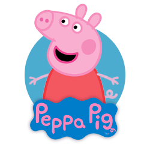
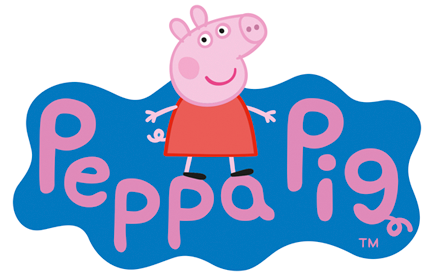

Peppa Pig's Home
“Peppa Pig: Live in South Africa” - in partnership with black - is an action-packed show, designed to deliver to young fans of ALL ages an unforgettable first, live theatre experience.
This fully immersive live musical stage show, featuring all your favourite interactive sing-a-longs, will have fans laughing, cheering and dancing – just like Peppa!
Tickets available at Computicket from R199 with discount family packages available.
Entertainment phenomenon, Peppa Pig - global superstar amongst the family preschool set – is hitting the road for her first ever South African theatrical tour.
This one-of-a-kind live stage experience – with incredible life-sized puppets and amazing costumed characters – brings Peppa Pig to life in a whole new way for South African audiences. Come join Peppa, George, Mummy Pig, Daddy Pig and more in a fantastic adventure filled with buckets of surprises and plenty of muddy puddles!